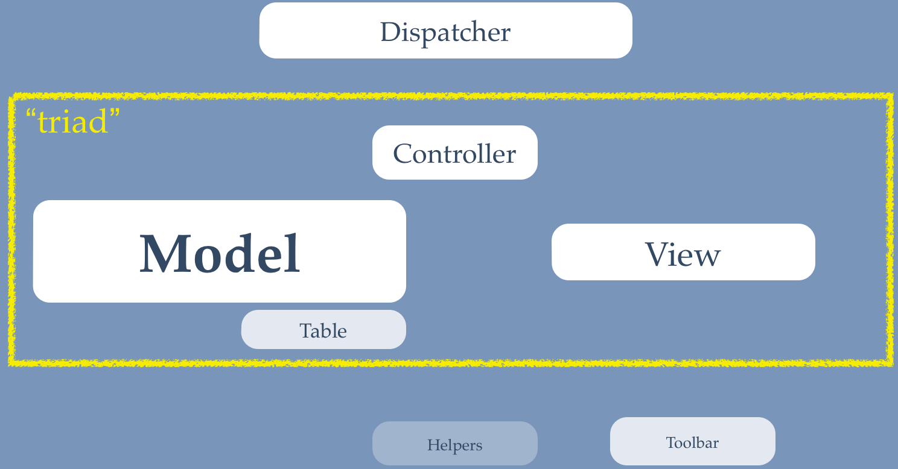

Permission is granted to copy, distribute and/or modify this document under the terms of the GNU Free Documentation License, Version 1.3 or any later version published by the Free Software Foundation; with no Invariant Sections, no Front-Cover Texts, and no Back-Cover Texts. A copy of the license can be found on-line at http://www.gnu.org/licenses/fdl.html.
May 2013
Table of Contents
Table of Contents
FOF (Framework on Framework) is a rapid application development framework for Joomla!™. Unlike other frameworks it is not standalone. It extends the Joomla!™ Platform instead of replacing it, featuring its own forked and extended version of the MVC classes, keeping a strong semblance to the existing Joomla!™ MVC API. This means that you don't have to relearn writing Joomla!™ extensions. Instead, you can start being productive from the first day you're using it. Our goal is to always support the officially supported LTS versions of Joomla!™ and not break backwards compatibility without a clear deprecation and migration path.
FOF is currently used by Akeeba products such as Akeeba Backup, Admin Tools, Akeeba Subscriptions, Akeeba Ticket System and Akeeba DocImport components.
The reason of existence of FOSS (Free and Open Source Software) is collaboration between developers. FOF is no exception; it exists because and for the community of Joomla!™ developers. It is provided free of charge and with all of the freedoms of the GPL for you to benefit. And in true Free Software spirit, the community aspect is very strong. Participating is easy and fun.
If you want to discuss FOF there is a Google Groups mailing list. This is a peer discussion group where developers working with FOF can freely discuss.
If you have a feature proposal or have found a bug, but you're not sure how to code it yourself, please report it on the list.
If you have a patch feel free to fork this project on GitHub (you only need a free account to do that) and send a pull request. Please remember to describe what you intended to achieve to help me review your code faster.
If you've found a cool hack (in the benign sense of the word, not the malicious one...), something missing from the documentation or have a tip which can help other developers feel free to edit the Wiki. We're all grown-ups and professionals, I believe there is no need of policing the wiki edits. If you're unsure about whether a wiki edit is appropriate, please ask on the list.
FOF is a rapid application development framework for the Joomla! CMS. Instead of trying to completely replace Joomla!™’s own API (formerly known as the Joomla!™ Platform) it builds upon it and extends it both in scope and features. In the end of the day it enables agony-free extension development for the Joomla! CMS.
In order to exploit the time-saving capabilities of the FOF framework to the maximum you need to understand how it's organized, the conventions used and how its different pieces work together. This documentation attempts to provide you with this knowledge.
As with every piece of documentation we had to answer two big questions: where do we start and how do we structure the content. The first question was easy to answer. Having given the presentation of the FOF framework countless times we have developed an intuitive grasp of how to start presenting it: from the abstract to the concrete.
The second question was harder to answer. Do we write a dry reference to the framework or more of a story-telling documentation which builds up its reader’s knowledge? Since we are all developers we can read the code (and DocBlocks), meaning that the first option is redundant. Therefore we decided to go for the second option.
As a result this documentation does not attempt to be a complete reference, a development gospel, the one and only source of information on FOF. On the contrary, this documentation aims to be the beginning of your journey, much like a travel guide. What matters the most is the journey itself, writing your own extensions based on FOF. As you go on writing software you will be full of questions. Most of them you’ll answer yourself. Some of them will be already answered in the wiki. A few of them you’ll have to ask on the mailing list. In the end of the day you will be richer in knowledge. If you do dig up a golden nugget of knowledge, please do consider writing a wiki page. This way we’ll all be richer and enjoy our coding trip even more.
Have fun and code on!
Some of the key features / highlights of FOF:
Convention over configuration, Rails style. Instead of having to painstakingly code every single bit of your component, it's sufficient to use our naming conventions, inspired by Ruby on Rails conventions. For example, if you have com_example, the foobar view will read from the #__example_foobars table which has a unique key named example_foobar_id. The default implementation of controllers, models, tables and views will also cater for the majority of use cases, minimising the code you'll need to write.
HMVC today, without relearning component development. There's a lot of talk about the need to re-engineer the MVC classes in Joomla! to support HMVC. What if we could give you HMVC support using the existing MVC classes, today, without having to relearn how to write components? Yes, it's possible with FOF. It has been possible since September 2011, actually. And for those who mumble their words and spread FUD, yes, it IS HMVC by any definition. The very existence of the FOFDispatcher class proves the point.
Easy reuse of view template files without ugly include(). More often than not you want to reuse view template files across views. The "traditional" way was by using include() or require() statements. This meant, however, that template overrides ceased working. Not any more! Using FOFView's loadAnyTemplate() you can load any view template file from the front- or back-end of your component or any other component, automatically respecting template overrides.
Automatic language loading and easy overrides. Are you sick and tired of having to load your component's language files manually? Do you end up with a lot of untranslated strings when your translators don't catch up with your new features? Yes, that sucks. It's easy to overcome. FOF will automatically handle language loading for you.
Media files override (works like template overrides). So far you knew that you can override Joomla!'s view template files using template overrides. But what about CSS or Javascript files? This usually required the users to "hack core", i.e. modify your views' PHP files, ending up in an unmaintainable, non-upgradeable and potentially insecure solution. Not any more! Using FOF's FOFTemplateUtils::addCSS and FOFTemplateUtils::addJS you can load your CSS and JS files directly from the view template file. Even better? You can use the equivalent of template overrides to let your users and template designers override them with their own implementations. They just have to create the directory templates/your_template/media/com_example to override the files normally found in media/com_example. So easy!
Automatic JSON and CSV views with no extra code (also useful for web services). Why struggle to provide a remote API for your component? FOF makes the data of each view accessible as JSON feeds opening a new world of possibilities for Joomla! components (reuse data in mobile apps, Metro-style Windows 8 tiles, browser extensions, mash-up web applications, ...). The automatic CSV views work on the same principle but output data in CSV format, suitable for painlessly data importing to spreadsheets for further processing. Oh, did we mention that we already have an almost RESTful web services implementation?
No code view templates. Don't you hate it that you have to write a different view template (in PHP and HTML) for each Joomla! version and, worse, each template out there? Don't you hate it having to teach non-developers how to not screw up your component with every update you publish? We feel your pain. That's why FOF supports the use of XML files as view templates, rendering them automatically to HTML. Not just forms; everything, including browse (multiple items) and single item views. Even better, you get to choose if you want to use traditional PHP/HTML view templates, XML view templates or a combination of both, even in the same view!
No code routing, ACL and overall application configuration. Since FOF 2.1 you can define your application's routing, access control integration and overall configuration without routing any code, just by using a simple to understand XML file. It's now easier than ever to have Joomla! extensions with truly minimal (or no) PHP code.
You can download FOF as an installable Joomla! library package from our repository. You can install it like any other extension under Joomla! 2.x and later.
You can clone a read-only copy of the Git repository of FOF in your local machine. Make sure you symlink or copy the fof directory to your dev site's libraries/fof directory. Alternatively, we publish dev releases in the dev release repository. These are installable packages but please note that they may be out of date compared to the Git HEAD. Dev releases are not published automatically and may be several revisions behind the current Git master branch.
The recommended method for including FOF in your component, module or plugin is using this short code snippet right after your defined('_JEXEC') or die() statement (Joomla! 2.x and later):
if (!defined('FOF_INCLUDED')) {
include_once JPATH_LIBRARIES . '/fof/include.php';
}Alternatively, you can use the one-liner:
require_once JPATH_LIBRARIES . '/fof/include.php';
From that point onwards you can use FOF in your extension.
Unfortunately, Joomla! doesn't allow us to version checking before installing a library package. This means that it's your responsibility to check that there is no newer version of FOF installed in the user's site before attempting to install FOF with your extension. In the following paragraphs we are going to demonstrate one way to do that for Joomla! 2.x / 3.x component packages.
Include a directory called fof in your installation package. The directory should contain the files of the installation package's fof directory. Then, in your script.mycomponent.php file add the following method:
/**
* Check if FoF is already installed and install if not
*
* @param object $parent class calling this method
*
* @return array Array with performed actions summary
*/
private function _installFOF($parent)
{
$src = $parent->getParent()->getPath('source');
// Load dependencies
JLoader::import('joomla.filesystem.file');
JLoader::import('joomla.utilities.date');
$source = $src . '/fof';
if (!defined('JPATH_LIBRARIES'))
{
$target = JPATH_ROOT . '/libraries/fof';
}
else
{
$target = JPATH_LIBRARIES . '/fof';
}
$haveToInstallFOF = false;
if (!is_dir($target))
{
$haveToInstallFOF = true;
}
else
{
$fofVersion = array();
if (file_exists($target . '/version.txt'))
{
$rawData = JFile::read($target . '/version.txt');
$info = explode("\n", $rawData);
$fofVersion['installed'] = array(
'version' => trim($info[0]),
'date' => new JDate(trim($info[1]))
);
}
else
{
$fofVersion['installed'] = array(
'version' => '0.0',
'date' => new JDate('2011-01-01')
);
}
$rawData = JFile::read($source . '/version.txt');
$info = explode("\n", $rawData);
$fofVersion['package'] = array(
'version' => trim($info[0]),
'date' => new JDate(trim($info[1]))
);
$haveToInstallFOF = $fofVersion['package']['date']->toUNIX() > $fofVersion['installed']['date']->toUNIX();
}
$installedFOF = false;
if ($haveToInstallFOF)
{
$versionSource = 'package';
$installer = new JInstaller;
$installedFOF = $installer->install($source);
}
else
{
$versionSource = 'installed';
}
if (!isset($fofVersion))
{
$fofVersion = array();
if (file_exists($target . '/version.txt'))
{
$rawData = JFile::read($target . '/version.txt');
$info = explode("\n", $rawData);
$fofVersion['installed'] = array(
'version' => trim($info[0]),
'date' => new JDate(trim($info[1]))
);
}
else
{
$fofVersion['installed'] = array(
'version' => '0.0',
'date' => new JDate('2011-01-01')
);
}
$rawData = JFile::read($source . '/version.txt');
$info = explode("\n", $rawData);
$fofVersion['package'] = array(
'version' => trim($info[0]),
'date' => new JDate(trim($info[1]))
);
$versionSource = 'installed';
}
if (!($fofVersion[$versionSource]['date'] instanceof JDate))
{
$fofVersion[$versionSource]['date'] = new JDate;
}
return array(
'required' => $haveToInstallFOF,
'installed' => $installedFOF,
'version' => $fofVersion[$versionSource]['version'],
'date' => $fofVersion[$versionSource]['date']->format('Y-m-d'),
);
}You need to call it from inside your postflight() method. For example:
/**
* Method to run after an install/update/uninstall method
*
* @param object $type type of change (install, update or discover_install)
* @param object $parent class calling this method
*
* @return void
*/
function postflight($type, $parent)
{
$fofInstallationStatus = $this->_installFOF($parent);
}Due to a bug/feature in Joomla! 1.6 and later, your component's manifest file must start with a letter before L, otherwise Joomla! will assume that lib_fof.xml is your extension's XML manifest and install FOF instead of your extension. We suggest using the com_yourComponentName.xml convention, e.g. com_todo.xml. There is a patch pending in Joomla!'s tracker for this issue, hopefully it will be accepted sometime soon.
FOF comes with two sample applications which are used to demonstrate its features, To-Do and Contact Us. These were conceived and developed in different points of FOF's development. As a result they are always in a state of flux and will definitely not expose all of FOF's features.
Another good way to learn some FOF tricks is by reading the source code of existing FOF-based components. Just remember that we are all real world developers and sometimes our code is anything but kosher ;)
Table of Contents
FOF is an MVC framework in heart and soul. It tries to stick as close as possible to the MVC conventions put forward by the Joomla! CMS since Joomla! 1.5, cutting down on unnecessary code duplication. The main premise is that your code will be DRY – not as the opposite of “wet”, but as in Don’t Repeat Yourself. Simply put: if you ever find yourself trying to copy code from a base class and paste it into a specialized class, you are doing it wrong.
In order to achieve this code isolation, FOF uses a very flexible structure for your components. A component's structure looks like this:
|  |
The Dispatcher is the entry point of your component. Some people would call this a "front Controller" and this is actually what it is. It's different than what we typically call a Controller in the sense that the Dispatcher is the only part of your component which is supposed to interface the underlying application (e.g. the Joomla! CMS) and gets to decide which Controller and task to execute based on the input data (usually this is the request data). No matter if you call it an entry point, front controller, dispatcher or Clint Eastwood its job is to figure out what needs to run and run it. We simply chose the name "Dispatcher" because, like all conventions, we had to call it something. So, basically, the Dispatcher will take a look at the input data, figure out which Controller and task to run, create an instance of it, push it the data and tell it to run the task. The Controller is expected to return the rendered data or a redirection which the Dispatcher will dully pass back to its caller.
Oh, wait, what is a Controller anyway?! Right below the Dispatcher you will see a bunch of stuff grouped as a "triad". The "triad" is commonly called "view" (with a lowercase v). Each triad does something different in your component. For example, one triad may allow you to handle clients, another triad allow you to handle orders and so on. Your component can have one or more triads. A triad usually contains a Controller, a Model and a View, hence the name ("triad" literally means "a bunch of three things"). The only mandatory member is the Controller. A triad may be reusing the Model and View from another triad – which is another reason why DRY code rocks– or it may even be view-less. So, a triad may actually be a bunch of one, two or three things, as long as it includes a Controller. Just to stop you from being confused or thinking about oriental organised crime and generally make your life easier we decided to call these "views" (with a lowercase v) instead of "triads". See? Now it is so much better.
FOF views follow the "fat Model - thin Controller" paradigm. This means that the Controller is a generally minimalist piece of code and the Model is what gets to do all the work. Knowing this very important bit of information, let's take a look at the innards of a view.
In the very beginning we have the Controller. The Controller has one or more tasks. Each task is an action of your component, like showing a list of records, showing a single record, publish a record, delete a record and so on. With a small difference. The Controller's tasks do not perform the actual work. They simply spawn an instance of the Model and push it the necessary data it needs. This is called "setting the state" of the Model. In most cases the Controller will also call a Model's method which does something. It's extremely important to note that the Controller will work with any Model that implements that method and that the Model is oblivious to the Controller. Then the Controller will create an instance of the View class, pass it the instance of the Model and tell it to go render itself. It will take the output of the View and pass it back to the Dispatcher.
Which brings us to the Model. The Model is the workhorse of the view. It implements the business logic. All FOF Models are passive Models which means that they are oblivious to the presence of the Controller and View. Actually, they are completely oblivious to the fact that they are part of a triad. That's right, Models can be used standalone, outside the context of the view or component they are designed to live in. The Model's methods will act upon the state variables which have already been set (typically, by the Controller) and will only modify the state variables or return the output directly. Models must never have to deal with input data directly or talk to specific Controllers and/or Views. Models are decoupled from everything, that's where their power lies.
Just a small interlude here. Right below the Model we see a small thing called a "Table". This is a strange beast. It's one part data adapter, one part model and one part controller, but nothing quite like any of this. The Table is used to create an object representing a single record. It is typically used to check the validity of a record before saving it to the database and post-process a record when reading it from the database (e.g. unserialise a field which contains serialised or JSON data).
The final piece of our view is the View class itself. It will ask the Model for the raw data and transform it into a suitable representation. Typically this means getting the raw records from the Model and create the HTML output, but that's not the only use for a View. A View could just as well render the data as a JSON stream, a CSV file, or even produce a graphic, audio or video file. It's what transforms the raw data into something useful, i.e. it's your presentation layer. Most often it will do so by loading view templates which are .php files which transform raw data to a suitable representation. If you are using the XML forms feature of FOF, the View will ask the Model to return the form definition and ask FOF's renderer to render this to HTML instead. Even though the actual rendering is delegated to the Renderer (not depicted above), it's still the View that's responsible for the final leg of the rendered data: passing it back to its caller. Yes, the View will actually neither output its data directly to the browser, nor talk to the underlying application. It returns the raw data back to its caller, which is almost always the Controller. Again, we have to stress that the View is oblivious to both the Controller and the Model being used. A properly written View is fully decoupled from everything else and will work with any data provider object implementing the same interface as a Model object and a caller which is supposed to capture its output for further consumption.
All classes comprising a view are fully decoupled. None is aware of the internal workings of another object in the same or a different view. This allows you to exchange objects at will, promoting code reuse. Even though it sounds like a lot of work it's actually less work and pays dividends the more features you get to add to your components.
There's another bit mentioned below the triad, the Toolbar. The Toolbar is something which conceptually belongs to the component and only has to do with views being rendered as HTML. It's what renders the title in the back-end, the actions toolbar in the front- or back-end and the navigation links / menu in the back-end. In case you missed the subtle reference: FOFToolbar allows you to render an actions toolbar even in the front-end of your component, something that's not possible with plain old Joomla!. You will simply need to add some CSS to do it.
Finally we mention the Helpers. The Helpers are pure static classes implementing every bit of functionality that's neither OOP, nor can it be categorised in any other object already mentioned. For example, methods to render drop-down selection lists. In so many words, "Helper" is a polite way of saying "non-OOP cruft we'd rather not talk about". Keep your Helpers to a minimum as they're a royal pain in the rear to test.
Please do keep in mind that this is just a generic overview of how an FOF-based component works. The real power comes from the fact that you don't need to know the internal workings of FOF to use it, you don't need to copy and paste code from it (woe is the developer who does that) and quite possibly you don't even need to write any code. At all. It's all discussed later on.
As it was casually mentioned in the previous section, the real power of FOF comes from the fact that it doesn't require you to write much or any code. All you have to do is to follow some conventions and understand what are the default actions carried out by FOF. This sections attempts to explain it all, one class at a time.
Following Joomla conventions, at the root of both the front- and back-end of an extension is the entry point for that end of the extension, named following the extension’s name.
For example, for com_foobar, we would create foobar.php in the root of each end. These files are not dispatchers, but they are the points in the extension that include the FOF library, and create an instance of FOF's dispatcher.
FOF is included with:
// Load FOF
include_once JPATH_LIBRARIES . '/fof/include.php';
if (!defined('FOF_INCLUDED')) {
JError::raiseError('500', 'FOF is not installed');
}Creating an instance of FOF's dispatcher for com_foobar would be done with:
FOFDispatcher::getTmpInstance('com_foobar')->dispatch();FOFDispatcher's main concern is routing your component. It takes
a look at the input data and decides which Controller to instantiate
and, if there is no task, figure out which task you meant to use. Even
though it's commonly used with the request data, it can also operate
on arbitrary input data passed to it through the
$config['input'] variable. This variable can be a
simple hash array (array of key/value pairs) or a FOFInput object. In
any case it will be converted to a FOFInput object and passed on to
the other classes (Controller, Model, Table, View) by
reference so that they all operate on the same set of
data.
The first thing you should know about is the naming convention used. All Dispatchers are named after the component (without the com_ prefix) and the word Dispatcher. For example, com_foobar's dispatcher is called FoobarDispatcher. If you do not provide a specialised dispatcher class, FOF will provide you with an automatically generated one.
You should be aware how the view (therefore the Controller) to
be used is selected when there is no view parameter defined in the
input data. FOF will use the defaultView variable
which, by default, contains the value cpanel. If you
have defined a default_view parameter in
fof.xml it will use that value instead.
Another thing you should know is how the task is selected when you don't specify one. Following the RESTful conventions, the task is chosen based on the view name and HTTP verb used in the request. The following possibilities are:
a DELETE request calls the delete task, deleting a record.
a POST or PUT request will issue the save task, saving or creating a record. Due to the poor support of the PUT HTTP verb in PHP we chose to map it to POST. If a new record is created, FOF will by default return a 201 Created HTTP header, whereas when a record is updated it will return a 200 OK HTTP header.
a GET request to a plural view (e.g. items) results in the browse task being called
a GET request to a singular view (e.g item) in the back-end results in the edit task being called, as long as you have a non-empty, non-zero input variable called id.
a GET request to a singular view (e.g item) in the front-end results in the read task being called, as long as you have a non-empty, non-zero input variable called id.
a GET request to a singular view (e.g item) in the front-end results in the add task being called, as long as you have an empty or zero input variable called id or if you skip it entirely.
Though technically not part of the Dispatcher, the view class to
be instantiated is also defined by the format input parameter. If none
is defined, html is assumed, creating an instance of
FOFViewHtml. FOF automatically supports two more formats you should
know about, json and csv.
Create a file named dispatcher.php in your
component's base directory. There is a different dispatcher for the
front- and back-end section of your component.
See the methods below for more information about what you can do.
public static function &getTmpInstance($option = null, $view = null, $config = array())
Return an instance of a dispatcher object. The parameters are:
Required. The name of the component, e.g. com_example.
Optional. Which view to instantiate. Use null to let the Dispatcher decide.
Optional. The array of configuration variables, discussed in the next chapter of this documentation.
public function onBeforeDispatch()
Runs before the dispatcher routes anything. Return true to allow the dispatcher to run. Return false to have the dispatcher raise an exception with code 403, usually resulting in a 403 Forbidden HTTP header being emitted.
public function onBeforeDispatchCLI()
Runs before the dispatcher routes anything when running under the CLI. Return true to allow the dispatcher to run. Return false to have the dispatcher raise an exception with code 403, usually resulting in a 403 Forbidden HTTP header being emitted.
public function onAfterDispatch()
Runs after the dispatcher routes everything and before returning control to the caller. Return true to allow the dispatcher to complete running. Return false to have the dispatcher raise an exception with code 403, usually resulting in a 403 Forbidden HTTP header being emitted.
public static function isCliAdmin()
Returns an array with two boolean values. The first one is true if the component is running under CLI mode. The second one is true if the component is running under the Joomla! administrator. This is used throughout FOF to determine whether the component is running inside the Joomla! front-end, back-end or a CLI app.
You can call a dispatcher from anywhere in Joomla! and let it run the component, rendering itself. This is useful in master/detail views, creating modules rendering a component's view, plugins injecting a component's view to an article... The possibilities are endless.
The main concept is that you need to instantiate the Dispatcher with the data you need and tell it to Dispatch itself. Typically, this can be accomplished like this:
$config = array(
'input' => array(
'option' => 'com_example',
'view' => 'items',
'layout' => 'funky',
'limit' => 10,
'limitstart' => 42,
)
);
FOFDispatcher::getTmpInstance('com_example', 'items', $config)->dispatch();Do note that it's always a good idea to put the last line inside a try/catch block, unless you really want to let a possible exception bubble up to the application.
FOF is currently offering web services, but it's not entirely RESTful (it lacks hypermedia support). Based on what you have already learned you probably realised that you can use the HTTP verb, and the view and format input variables to address everything through web services. For example, something like http://www.example.com/index.php?option=com_example&view=items&format=json would return a nice JSON-encoded (and paginated) list of records in the #__example_items table. Without writing any code. Not bad, huh?
This is all fine and dandy, but what about the need to authenticate the user before accessing data? Let's say that we have a doctor's website with an FOF-based component handling his appointments. We don't want everyone to see all patients' information but we'd definitely want the doctor to do so and each patient to have access to her own appointments. We can easily build that feature in our component using the Model's post-processing feature (more on that later), but in the end of the day we need to have a logged in user to figure out who can see what.
Joomla! has a bad habit, like all web apps: it normally needs cookies to know if you're logged in or not. This isn't a very good idea. In order to pull your appointments you'd need at least three HTTP requests: one to get the login form (and the all-necessary form token), one to login (and get your session cookie) and one to pull the information. Never mind it's not a RESTful approach, this is an utter hassle to begin with! There has to be a better way. And there is.
FOF supports five different transparent authentication methods:
HTTP Basic Authentication using a username and password pair in plain text (a bad idea unless you're using HTTPS)
Plaintext, JSON-encoded username and password pair passed in the _fofauthentication query string parameter (a bad idea unless you're using HTTPS)
Plaintext username and password in the _fofauthentication_username and _fofauthentication_username query string parameters (a bad idea unless you're using HTTPS)
Encrypted information protected with a TOTP passed in the _fofauthentication query string parameter
HTTP Basic Authentication using encrypted information protected with a TOTP (the username must be "_fof_auth")
FIrst, what does "transparent" mean? Once the Dispatcher sees any of this data and as long as the corresponding authentication method is enabled it will try to log you in. If it succeeds, Joomla! now knows you are logged in without sending you a cookie. The Dispatcher will then happily route your component and just before it returns it will log you out. You are being logged in and out of the Joomla! site transparently, without the remote end having to know that the web service is implemented using Joomla! and without having to mess around with cookies. You're welcome!
Now, you might be wondering, what the heck is a TOTP and why is it a good thing to have? TOTP stands for Time-based One Time Password. It's the same stuff Google uses in its two-step authentication. Both parties (the component and the remote client) know a secret key. With this key and the current date a time a unique six digit password is created, called a TOTP. This is used, together with some admittedly weakly implemented AES-128 cryptography, to encrypt your username and password. FOFDispatcher will decode it using the TOTP it generates itself. Therefore even though a symmetrical encryption algorithm is used, the encryption key is not exchanged between the two parties during the request. The actual secret key can be made known to the remote client through a secure channel – just think about how Google had you set up Google Authenticator on your phone.
I know what you're thinking. Replay attacks. What if an attacker sits between the FOF component and the remote client? The truth is that they can't accomplish much, for two reasons. First it's the ephemeral nature of a TOTP. It is only valid for a limited amount of time, 6 seconds by default. The attacker needs to be really darn fast – not that it's hard in the age of the WiFi Pineapple. I know, I know, 6 seconds is plenty for a fast attacker to get back the data we fetched. How do we protect it? If you use the encrypted authentication method all of your data is automatically encrypted using the same key. Without the key, the data is garbled. This is enough to deter simple attacks but of course won't hold up a lot against a determined and resourceful opponent. Use HTTPS instead. This kind of encryption implemented in FOF is designed as a poor man's substitute for proper encryption, not a drop-in replacement.
@TODO Example of encrypted authentication
Table of Contents
All MVC and associated classes in FOF (Dispatcher, Controller, Model, View, Table, Toolbar) come with a default behavior, for example where to look for model files, how to handle request data and so on. While this is fine most of the times –as long as you follow FOF’s conventions– this is not always desirable.
For example, if you are building a CCK (something like K2) you may want to look for view templates in a non-standard directory in order to support alternative “themes”. Or, maybe, if you're building a contact component you only want to expose the add view to your front-end users so that they can file a contact request but not view other people's contact requests. You get the idea.
The traditional approach to development prescribes overriding
classes, even to the extent of copying and pasting code. If you've ever
attended one of my presentations you've probably figured that I consider
copying and pasting code a mortal sin. You may have also figured that,
like all developers, I am lazy and dislike writing lots of code.
Naturally, FOF being a RAD tool it provides an elegant solution to this
problem. The $config array and its sibling, the
fof.xml file.
You may have observed that FOF’s MVC classes can be passed an
optional array parameter $config. This is a hash array with
configuration options. It is being passed from the Dispatcher to the
Controller and from there to the Model, View and Table classes.
Essentially, this is your view (MVC triad) configuration. Setting its
options allows you to modify FOF’s internal workings without writing
code.
The various possible settings are explained in “The configuration settings” section below.
The $config array is a great idea but has a major
drawback: you have to create one or several .php
files with specialized classes to use it. Remember the FOF promise about
not having to write code unless absolutely necessary? Yep, this doesn’t
stick very well with that promise. So the fof.xml
file was born in FOF 2.1.
The fof.xml file is a simple XML file placed
inside your component's back-end
directory, e.g. administrator/com_example/fof.xml.
It contains configuration overrides for the front-end, back-end and CLI
parts of your FOF component.
<?xml version="1.0" encoding="UTF-8"?> <fof> <!-- Component back-end options --> <backend> <!-- Dispatcher options --> <dispatcher> <option name="default_view">items</option> </dispatcher> </backend> <!-- Component front-end options --> <frontend> <!-- Dispatcher options --> <dispatcher> <option name="default_view">item</option> </dispatcher> <!-- Options common for all views --> <view name="*"> <!-- Per-task ACL settings. The star task sets the default ACL privileges for all tasks. --> <acl> <task name="*">false</task> </acl> </view> <view name="item"> <!-- Task mapping --> <taskmap> <task name="list">browse</task> </taskmap> <!-- Per-task ACL settings. An empty string removes ACL checks. --> <acl> <!-- Everyone, including guests, can access dosomething --> <task name="dosomething"></task> <!-- Only people with the core.manage privilege can access the somethingelse task --> <task name="somethingelse">core.manage</task> </acl> </view> </frontend> </fof>
The fof.xml file has an
<fof> root element. Inside it you can have zero or
one tags called <frontend>,
<backend> and <cli> which
configure FOF for front-end, back-end and CLI access respectively.
Please note that the CLI is a special case: it will mix both the
back-end and CLI settings to derive the final configuration. In the
other two cases (front- or back-end access) only the configuration for
this specific mode of access will be used.
You can configure the way the Dispatcher works using the
<dispatcher> tag. Inside it you can have one or
more <option> tags. The name attribute defines the
name of the configuration variable to set, while the tag's content
defines the value of this configuration variable.
The available variables are:
Defines the default view to show if none is defined in the
input data. By default this is cpanel. In the
example above we set it to items in the back-end and item in the
front-end.
There are several options that are applied per view. In the
context of the fof.xml file, a “view” actually
refers to an MVC triad, not just the View part of the triad. In so
many words, the options affect the Controller, Model and View used to
render this particular component view. You define the view the options
apply to using the name attribute of the view tag.
The settings of each view are isolated from the settings of
every other view, with one notable exception: the star view, i.e.
name="*". This is a placeholder view that defines the
default settings. These settings are applied to all views. If you also
have a view tag for a view, the default settings (from the star view)
and the settings for the particular view are merged together. This
applies to all settings described below.
The task map settings allow you to map specific tasks to
specific Controller methods. Other frameworks would call this the
“routing” feature. It works the same way as adding running
registerTask in your specialized Controller
class.
The task map is enclosed inside a single
<taskmap> tag. You can have exactly zero or one
<taskmap> tags inside each view tag.
Inside the <taskmap> tag you can have one
or more <task> tags. The name
attribute defines the name of the task to map, whereas the content
of the tag defines the controller’s method which will be called for
this task.
The ACL settings can be used to override or fine-tune the
access control for each task of the particular view. Even though FOF
comes with default ACL mappings for its basic tasks, these are not
always sufficient or appropriate for all situations. Normally this
is achieved by overriding the
onBefore methods in
the Controller, e.g. TasknameonBeforeSave to set up the ACL
checks for the save task. You can use the ACL mappings in the
fof.xml instead of such checks. You can even
use the ACL mapping in fof.xml for custom tasks
for which no
onBefore method
exists.Taskname
The ACL settings are enclosed inside a single
<acl> tag. You can have exactly zero or one
<acl> tags inside each view tag.
Inside the <acl> tag you can have one or
more <task> tags. The name attribute defines the
name of the task to apply the access control, whereas the content of
the tag defines the Joomla! ACL privilege required to access this
task. You can use any core ACL privilege or any custom ACL privilege
defined in your component's access.xml file. If
you leave the content blank then no ACL check is performed (the task
is always accessible by all users). If you use the special value
false then the ACL privilege is always going to fail, i.e. the task
will not be accessible by any user.
The following settings can be used either in the
$config array passed to a Dispatcher, Controller, Model or
View class or in the fof.xml file’s
<option> tags inside the <view>
tags.
A bit mask which defines the automatic URL routing of redirections. A value of 1 means that front-end redirections will be put through Joomla!’s JRoute::_(). A value of 2 means that back-end redirections will be put through Joomla!’s JRoute::_(). You can combine multiple values by adding them together.
The base path of the component.
In $config: Specify the absolute path.
In fof.xml: Specify a path relative to the site’s root.
A comma separated list of tasks which support Joomla!’s caching.
Define a comma separated list of item IDs to limit the view
on. Normally this is empty. Only use when you want to limit a view
to very specific items. Only valid in the
fof.xml file.
Should we be doing a token check for the tasks of this view? The possible values are:
0 - no token checks are performed
1 - token checks are always performed
2 - token checks are always performed in the back-end and in in the front-end, but only when the request format is 'html' (default setting)
3 - token checks are performer only in the back-end
The task to execute if none is defined. The default value is
display.
The content plugin event to trigger after deleting the data. Default: onContentAfterDelete
The content plugin event to trigger after saving the data. Default: onContentAfterSave
The content plugin event to trigger before deleting the data. Default: onContentBeforeDelete
The content plugin event to trigger before saving the data. Default: onContentBeforeSave
The content plugin event to trigger after changing the published state of the data. Default: onContentChangeState
The content plugin event to trigger when cleaning cache. There is no default value.
The path where the View will be looking for helper classes.
By default it's the helpers directory inside
your component's directory.
In $config: Specify an absolute path.
In fof.xml: Specify a path relative to the component's directory.
Define an item ID to limit the view on. Normally this is
empty. Only use when you want to limit a view to one single item.
Only valid in the fof.xml file.
Set to 1 to prevent the Model's populateState() method from running. By default the method is empty and does nothing, as the Model is supposed to be decoupled from the request information, having the Controller push state variables to it.
The default layout to use for this view. This is normally determined automatically based on the task currently being executed.
The path where the Controller will be looking for Model
class files. By default it's the models
directory of the component's directory.
In $config: Specify an absolute path.
In fof.xml: Specify a path relative to the component's directory.
The naming prefix for the Model to be loaded by the
Controller. The default option is
ComponentnameModelComponentname is the name of the
component without the com_ prefix.
The name of the Model class to load. Automatically defined based on the component and view names.
The path where Controller classes will be searched for. By
default it's the controllers directory inside
your component's directory.
In $config: Specify the absolute path.
In fof.xml: Specify a path relative to the component's root directory.
The path where the Model will be looking for table classes.
By default it's the tables directory inside
your component's directory.
In $config: Specify an absolute path.
In fof.xml: Specify a path relative to the component's directory.
Set the name of the table class the Model will use. Please
note that the the component name is added to this name
automatically. For example, given a component com_example and a
table setting of foobar the actual table class
which will be used will be ExampleTableFoobar.
The name of the database table to use in the table class of this view. It is in the format of #__tablename, e.g. #__example_items
The name of the key field of the database table to use in the table class of this view. It is in the format of component_view_id, e.g. example_item_id.
The path where the View will be looking for view template
(.php) or form (.xml) files. By default it's the
tmpl directory inside the current view's
directory.
In $config: Specify an absolute path.
In fof.xml: Specify a path relative to the component's directory.
The path where the Controller will be looking for View class
files. By default it's the views directory
inside your component's directory.
In $config: Specify an absolute path.
In fof.xml: Specify a path relative to the component's directory.
The name of the View class to load. Automatically defined based on the component and view names.
Copyright (C) 2000, 2001, 2002 Free Software Foundation, Inc. 51 Franklin St , Fifth Floor, Boston, MA 02110-1301 USA . Everyone is permitted to copy and distribute verbatim copies of this license document, but changing it is not allowed.
The purpose of this License is to make a manual, textbook, or other functional and useful document "free" in the sense of freedom: to assure everyone the effective freedom to copy and redistribute it, with or without modifying it, either commercially or noncommercially. Secondarily, this License preserves for the author and publisher a way to get credit for their work, while not being considered responsible for modifications made by others.
This License is a kind of "copyleft", which means that derivative works of the document must themselves be free in the same sense. It complements the GNU General Public License, which is a copyleft license designed for free software.
We have designed this License in order to use it for manuals for free software, because free software needs free documentation: a free program should come with manuals providing the same freedoms that the software does. But this License is not limited to software manuals; it can be used for any textual work, regardless of subject matter or whether it is published as a printed book. We recommend this License principally for works whose purpose is instruction or reference.
This License applies to any manual or other work, in any medium, that contains a notice placed by the copyright holder saying it can be distributed under the terms of this License. Such a notice grants a world-wide, royalty-free license, unlimited in duration, to use that work under the conditions stated herein. The "Document", below, refers to any such manual or work. Any member of the public is a licensee, and is addressed as "you". You accept the license if you copy, modify or distribute the work in a way requiring permission under copyright law.
A "Modified Version" of the Document means any work containing the Document or a portion of it, either copied verbatim, or with modifications and/or translated into another language.
A "Secondary Section" is a named appendix or a front-matter section of the Document that deals exclusively with the relationship of the publishers or authors of the Document to the Document's overall subject (or to related matters) and contains nothing that could fall directly within that overall subject. (Thus, if the Document is in part a textbook of mathematics, a Secondary Section may not explain any mathematics.) The relationship could be a matter of historical connection with the subject or with related matters, or of legal, commercial, philosophical, ethical or political position regarding them.
The "Invariant Sections" are certain Secondary Sections whose titles are designated, as being those of Invariant Sections, in the notice that says that the Document is released under this License. If a section does not fit the above definition of Secondary then it is not allowed to be designated as Invariant. The Document may contain zero Invariant Sections. If the Document does not identify any Invariant Sections then there are none.
The "Cover Texts" are certain short passages of text that are listed, as Front-Cover Texts or Back-Cover Texts, in the notice that says that the Document is released under this License. A Front-Cover Text may be at most 5 words, and a Back-Cover Text may be at most 25 words.
A "Transparent" copy of the Document means a machine-readable copy, represented in a format whose specification is available to the general public, that is suitable for revising the document straightforwardly with generic text editors or (for images composed of pixels) generic paint programs or (for drawings) some widely available drawing editor, and that is suitable for input to text formatters or for automatic translation to a variety of formats suitable for input to text formatters. A copy made in an otherwise Transparent file format whose markup, or absence of markup, has been arranged to thwart or discourage subsequent modification by readers is not Transparent. An image format is not Transparent if used for any substantial amount of text. A copy that is not "Transparent" is called "Opaque".
Examples of suitable formats for Transparent copies include plain ASCII without markup, Texinfo input format, LaTeX input format, SGML or XML using a publicly available DTD, and standard-conforming simple HTML, PostScript or PDF designed for human modification. Examples of transparent image formats include PNG, XCF and JPG. Opaque formats include proprietary formats that can be read and edited only by proprietary word processors, SGML or XML for which the DTD and/or processing tools are not generally available, and the machine-generated HTML, PostScript or PDF produced by some word processors for output purposes only.
The "Title Page" means, for a printed book, the title page itself, plus such following pages as are needed to hold, legibly, the material this License requires to appear in the title page. For works in formats which do not have any title page as such, "Title Page" means the text near the most prominent appearance of the work's title, preceding the beginning of the body of the text.
A section "Entitled XYZ" means a named subunit of the Document whose title either is precisely XYZ or contains XYZ in parentheses following text that translates XYZ in another language. (Here XYZ stands for a specific section name mentioned below, such as "Acknowledgements", "Dedications", "Endorsements", or "History".) To "Preserve the Title" of such a section when you modify the Document means that it remains a section "Entitled XYZ" according to this definition.
The Document may include Warranty Disclaimers next to the notice which states that this License applies to the Document. These Warranty Disclaimers are considered to be included by reference in this License, but only as regards disclaiming warranties: any other implication that these Warranty Disclaimers may have is void and has no effect on the meaning of this License.
You may copy and distribute the Document in any medium, either commercially or noncommercially, provided that this License, the copyright notices, and the license notice saying this License applies to the Document are reproduced in all copies, and that you add no other conditions whatsoever to those of this License. You may not use technical measures to obstruct or control the reading or further copying of the copies you make or distribute. However, you may accept compensation in exchange for copies. If you distribute a large enough number of copies you must also follow the conditions in section 3.
You may also lend copies, under the same conditions stated above, and you may publicly display copies.
If you publish printed copies (or copies in media that commonly have printed covers) of the Document, numbering more than 100, and the Document's license notice requires Cover Texts, you must enclose the copies in covers that carry, clearly and legibly, all these Cover Texts: Front-Cover Texts on the front cover, and Back-Cover Texts on the back cover. Both covers must also clearly and legibly identify you as the publisher of these copies. The front cover must present the full title with all words of the title equally prominent and visible. You may add other material on the covers in addition. Copying with changes limited to the covers, as long as they preserve the title of the Document and satisfy these conditions, can be treated as verbatim copying in other respects.
If the required texts for either cover are too voluminous to fit legibly, you should put the first ones listed (as many as fit reasonably) on the actual cover, and continue the rest onto adjacent pages.
If you publish or distribute Opaque copies of the Document numbering more than 100, you must either include a machine-readable Transparent copy along with each Opaque copy, or state in or with each Opaque copy a computer-network location from which the general network-using public has access to download using public-standard network protocols a complete Transparent copy of the Document, free of added material. If you use the latter option, you must take reasonably prudent steps, when you begin distribution of Opaque copies in quantity, to ensure that this Transparent copy will remain thus accessible at the stated location until at least one year after the last time you distribute an Opaque copy (directly or through your agents or retailers) of that edition to the public.
It is requested, but not required, that you contact the authors of the Document well before redistributing any large number of copies, to give them a chance to provide you with an updated version of the Document.
You may copy and distribute a Modified Version of the Document under the conditions of sections 2 and 3 above, provided that you release the Modified Version under precisely this License, with the Modified Version filling the role of the Document, thus licensing distribution and modification of the Modified Version to whoever possesses a copy of it. In addition, you must do these things in the Modified Version:
If the Modified Version includes new front-matter sections or appendices that qualify as Secondary Sections and contain no material copied from the Document, you may at your option designate some or all of these sections as invariant. To do this, add their titles to the list of Invariant Sections in the Modified Version's license notice. These titles must be distinct from any other section titles.
You may add a section Entitled "Endorsements", provided it contains nothing but endorsements of your Modified Version by various parties--for example, statements of peer review or that the text has been approved by an organization as the authoritative definition of a standard.
You may add a passage of up to five words as a Front-Cover Text, and a passage of up to 25 words as a Back-Cover Text, to the end of the list of Cover Texts in the Modified Version. Only one passage of Front-Cover Text and one of Back-Cover Text may be added by (or through arrangements made by) any one entity. If the Document already includes a cover text for the same cover, previously added by you or by arrangement made by the same entity you are acting on behalf of, you may not add another; but you may replace the old one, on explicit permission from the previous publisher that added the old one.
The author(s) and publisher(s) of the Document do not by this License give permission to use their names for publicity for or to assert or imply endorsement of any Modified Version.
You may combine the Document with other documents released under this License, under the terms defined in section 4 above for modified versions, provided that you include in the combination all of the Invariant Sections of all of the original documents, unmodified, and list them all as Invariant Sections of your combined work in its license notice, and that you preserve all their Warranty Disclaimers.
The combined work need only contain one copy of this License, and multiple identical Invariant Sections may be replaced with a single copy. If there are multiple Invariant Sections with the same name but different contents, make the title of each such section unique by adding at the end of it, in parentheses, the name of the original author or publisher of that section if known, or else a unique number. Make the same adjustment to the section titles in the list of Invariant Sections in the license notice of the combined work.
In the combination, you must combine any sections Entitled "History" in the various original documents, forming one section Entitled "History"; likewise combine any sections Entitled "Acknowledgements", and any sections Entitled "Dedications". You must delete all sections Entitled "Endorsements".
You may make a collection consisting of the Document and other documents released under this License, and replace the individual copies of this License in the various documents with a single copy that is included in the collection, provided that you follow the rules of this License for verbatim copying of each of the documents in all other respects.
You may extract a single document from such a collection, and distribute it individually under this License, provided you insert a copy of this License into the extracted document, and follow this License in all other respects regarding verbatim copying of that document.
A compilation of the Document or its derivatives with other separate and independent documents or works, in or on a volume of a storage or distribution medium, is called an "aggregate" if the copyright resulting from the compilation is not used to limit the legal rights of the compilation's users beyond what the individual works permit. When the Document is included in an aggregate, this License does not apply to the other works in the aggregate which are not themselves derivative works of the Document.
If the Cover Text requirement of section 3 is applicable to these copies of the Document, then if the Document is less than one half of the entire aggregate, the Document's Cover Texts may be placed on covers that bracket the Document within the aggregate, or the electronic equivalent of covers if the Document is in electronic form. Otherwise they must appear on printed covers that bracket the whole aggregate.
Translation is considered a kind of modification, so you may distribute translations of the Document under the terms of section 4. Replacing Invariant Sections with translations requires special permission from their copyright holders, but you may include translations of some or all Invariant Sections in addition to the original versions of these Invariant Sections. You may include a translation of this License, and all the license notices in the Document, and any Warranty Disclaimers, provided that you also include the original English version of this License and the original versions of those notices and disclaimers. In case of a disagreement between the translation and the original version of this License or a notice or disclaimer, the original version will prevail.
If a section in the Document is Entitled "Acknowledgements", "Dedications", or "History", the requirement (section 4) to Preserve its Title (section 1) will typically require changing the actual title.
You may not copy, modify, sublicense, or distribute the Document except as expressly provided for under this License. Any other attempt to copy, modify, sublicense or distribute the Document is void, and will automatically terminate your rights under this License. However, parties who have received copies, or rights, from you under this License will not have their licenses terminated so long as such parties remain in full compliance.
The Free Software Foundation may publish new, revised versions of the GNU Free Documentation License from time to time. Such new versions will be similar in spirit to the present version, but may differ in detail to address new problems or concerns. See http://www.gnu.org/copyleft/ .
Each version of the License is given a distinguishing version number. If the Document specifies that a particular numbered version of this License "or any later version" applies to it, you have the option of following the terms and conditions either of that specified version or of any later version that has been published (not as a draft) by the Free Software Foundation. If the Document does not specify a version number of this License, you may choose any version ever published (not as a draft) by the Free Software Foundation.
To use this License in a document you have written, include a copy of the License in the document and put the following copyright and license notices just after the title page:
Copyright (C) YEAR YOUR NAME.
Permission is granted to copy, distribute and/or modify this document under the terms of the GNU Free Documentation License, Version 1.2 or any later version published by the Free Software Foundation; with no Invariant Sections, no Front-Cover Texts, and no Back-Cover Texts. A copy of the license is included in the section entitled "GNU Free Documentation License".
If you have Invariant Sections, Front-Cover Texts and Back-Cover Texts, replace the "with...Texts." line with this:
with the Invariant Sections being LIST THEIR TITLES, with the Front-Cover Texts being LIST, and with the Back-Cover Texts being LIST.
If you have Invariant Sections without Cover Texts, or some other combination of the three, merge those two alternatives to suit the situation.
If your document contains nontrivial examples of program code, we recommend releasing these examples in parallel under your choice of free software license, such as the GNU General Public License, to permit their use in free software.